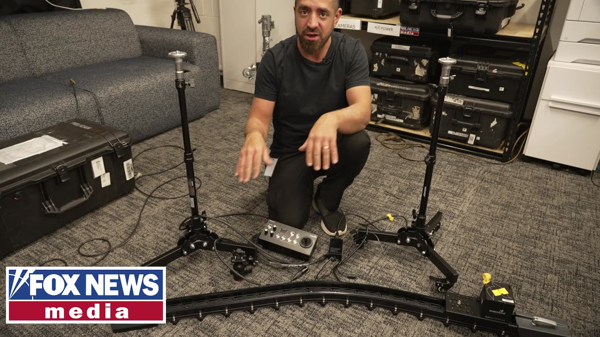
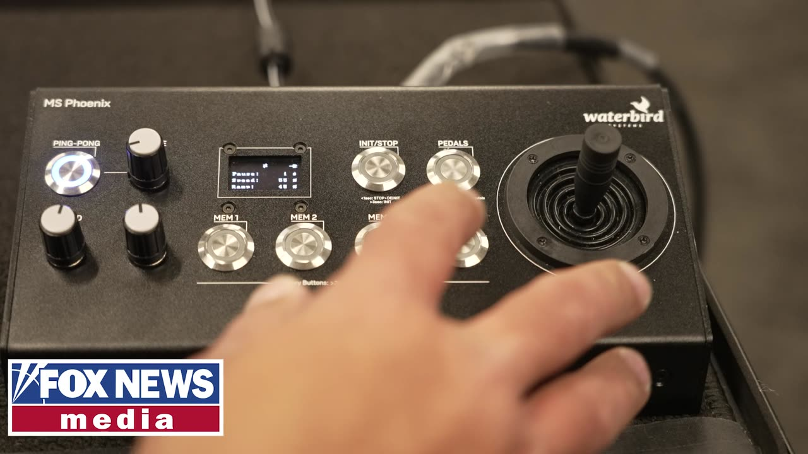
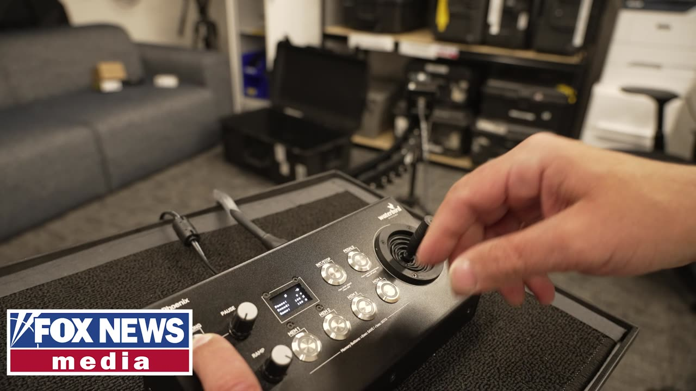
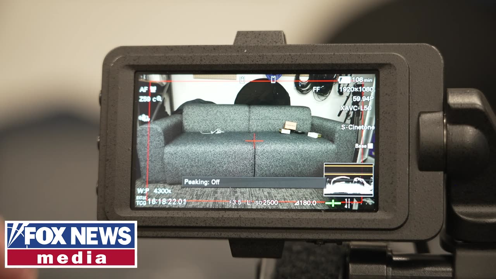
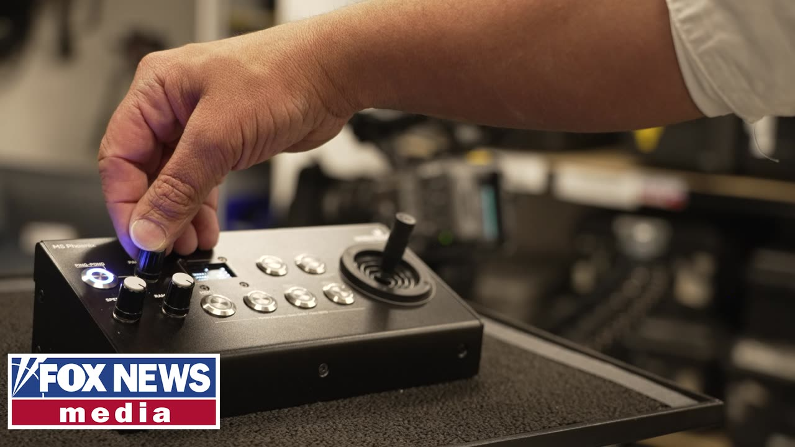
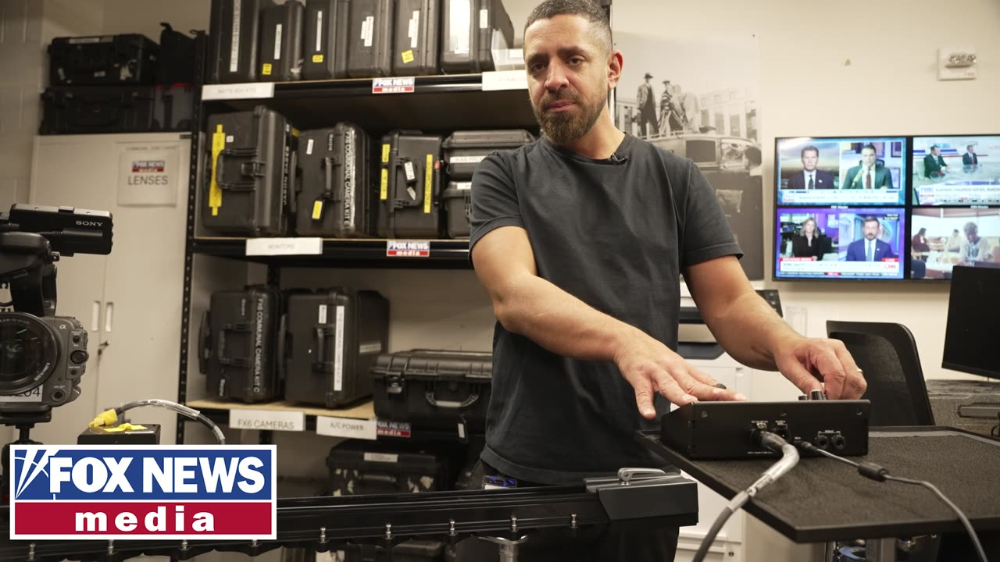

Waterbird Slider: Setup & Operation
How to set up and run the Waterbird Slider, fix a reversed joystick, and see it in action.
Step-by-step guide
1 · Know the kit

What's in the case
- Arc track: the curve lets you cut almost any angle or hold a simple two-shot.
- Ball head for the camera, which mounts to the motor.
- Two stands. They're enough for now. Heavier-duty stands may come later.
- Remote controller, connecting cable and power supply.

The controller
The joystick moves the camera along the track by hand. The buttons store track positions. The dials set pause, speed and ramp, and you can change them while the slider is moving.
2 · Set up the slider

Brakes off while it moves
Lever down = locked. Lever up = unlocked. Keep the brakes off whenever the carriage is travelling, to protect the slider.

Mount the track on the stands
Screw each stand into the second nut from the end of the track. The stands are on wheels, so you can spin them on. This is easier with two people.

Connect cable and power
- Male pins of the cable go into the controller.
- Female end goes into the motor.
- Plug the power supply into the motor, mount the camera, and power it on.
3 · Troubleshooting

Joystick moving the wrong way?
If pushing left sends the track right, the joystick is mirrored. Unplug the controller, then plug it back in while holding Ping Pong. The screen will read "Joystick swap", and left will move the track left again.
4 · Angle the track for a two-shot
Start at the centre mark
An arrow sticker marks the middle of the track. Use the joystick to line the lens up with the arrow, then aim the camera's crosshair at the middle of your subjects (here, the middle of the couch).

Check each end of the move
Drive the camera to the far left and check the monitor. The crosshair should still sit centred between your two subjects. Then do the same at the far right.

Nudge the track until it's centred
If an end is off, release the brake on that end and angle the track out ever so slightly until the crosshair is centred again.
Tip: have someone hold the middle and the other end while you adjust, so the positions you've already set don't move.
5 · Program the move

Set the in and out points
- Drive the camera to the far left position.
- Hold INIT/Stop until the light flashes red.
- Drive to the far right, and hold INIT/Stop again until it goes red.
- Press Ping Pong. The camera will now travel back and forth between the two points.

Dial in pause, ramp and speed
| Dial | What it does | Starting point |
|---|---|---|
| Pause | How long it waits at each end, in seconds (the same as "dwell" on the MYT slider). The dial is very sensitive. | ~2 sec |
| Ramp | How gently it accelerates from a stop into full motion | 60–70 |
| Speed | Top travel speed | 50–70% |
6 · Manual mode

Ride the speed during the interview
You can change the speed mid-move, even in Ping Pong. If you can tell a subject is about to say something important, slow the move down. Bring the speed back up once they finish the sentence.
7 · In the field